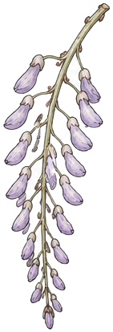
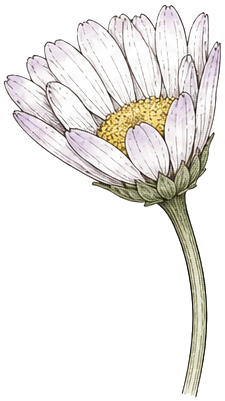
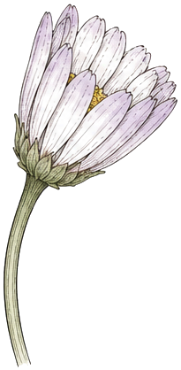
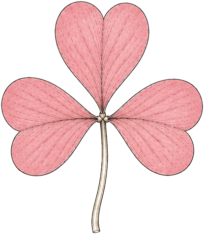
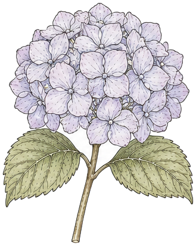
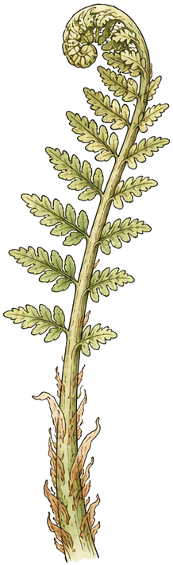
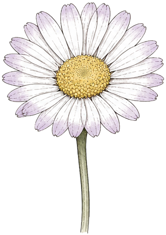
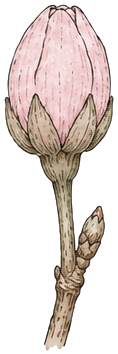
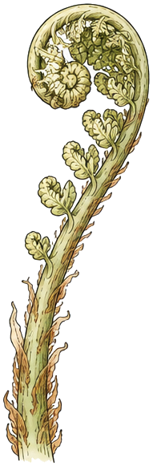
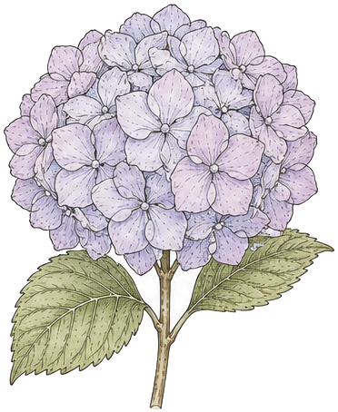

How should Kai's Flow teach?
Three questions, each with options drawn as real screens on a computer and a phone: how a new person gets set up, how they learn the way of working (not only the buttons), and where the in-depth how-to lives, including the typing shortcuts. Pick as many as you like in each section; they combine. Then press Copy my picks, for example "onboarding A+C, method B+D, reference C, typing card B, token hints A". Each option says how it feels and what it costs to build: S is a day or so, M a few days, L a week or more. Colours are the app's own tokens; none is changed. The method itself is drafted in docs/METHOD.md for you to edit.
What's there today
- Onboarding: one screen. It asks for your name (optional) and three things that become today's Top 3, with dates read as you type. It has Skip and Import. Settings → Replant opens it again.
- The tour: five garden notes on your first Today. On a phone they cover capture, Top 3, swipe, Plan / Shut down and Chat; on a computer, the sidebar, ⌘K, Top 3, the calendar and ?. Then three one-line hints you meet once each (swipe, calendar, Inbox). "Seen" syncs, so a new phone doesn't repeat them.
- The in-app Guide: 11 short articles in 4 sections. Each step is one line with a crop of the real screen. There's search, "Show me around again", the shortcut sheet and Chat.
- The website: 9 guides (getting started, import, gestures, keyboard shortcuts, capture from anywhere, AI assistants, Android, Windows, your data), 7 feature pages, and field notes (the changelog).
What a new person still needs
- The why. Every piece teaches a button. Nothing says "clear the Inbox daily", "three is plenty" or "close the day", or why.
- Days 2 to 7. Onboarding ends on day one. Ritual times are never asked for, and nothing introduces focus rounds or the weekly review.
- Half the app has no Guide article: the Inbox, Time slots, Focus, Review, Journal, People, Library, Paper, smart lists, snooze, areas and domains, labels, Chat, MCP.
- The typing marks (
#*!30mevery//>) are only in the website's shortcut table, never where you type.
How other apps teach
- Sunsama: your first daily plan is the tutorial (7 guided steps), and the guide repeats lightly on days 2 and 3. The method ("plan to do less") lives on its blog.
- Akiflow: ? opens Help & Guides: repeat onboarding, a setup checklist, everyday tips. Paid plans get a 1:1 call.
- Todoist: a hub of 15 productivity methods tied to templates, and a quiz that picks one from your biggest problem.
- Things: first launch makes a "Meet Things" project; each task teaches one thing, and you can re-create it from Help.
- Notion: asks your role and use, then seeds about five templates. Its Getting Started page is a do-it-yourself checklist.
- TickTick: a pre-filled Welcome list and a New User Guide. It teaches features, not a method.
- Superhuman: a 1:1 call doubled full switching. Its self-serve version copied games: a practice inbox, one shortcut at a time. Setup completion went from 30% to 98%.
1 · Onboarding
The first ten minutes. Today: name + three things → Today → five notes. All three options keep that start and add to it.
AYour first morning, for real
Six short steps where you do real things: your three things, pick the goal, drag it onto the day, set your ritual times, try ⌘K or hold-to-talk, done. It feels like being walked through your actual first morning, not a slideshow. Every step has Later, which saves your place, and Settings → Finish setting up picks it back up.
MIt reuses today's onboarding screen and Plan my day's pick and time steps. New: the step frame, one saved "where you were", and the ritual-time step.

Drag it onto the day. A task with a time gets done. Everything snaps to 15 minutes, and you can move it later.

Kai's Flow offers Plan my day in the morning and Shut down in the evening. About three minutes each.

Shut downfrom five17:30change them any time in Settings
BChoose your path
One question: studies, work or life? Then a small starter garden to match: a few areas, a Time slot, two routines, and a Meet Kai's Flow project whose six tasks each teach one thing (Things does this). It feels like walking into a house that's already furnished. You can untick anything, or start empty.
MThe three starter sets are data. One seeding function writes them through the outbox, with an Undo for a week. The Meet Kai's Flow project is the cheap, high-value half, and works without the rest.
Untick what you don't want. It's all yours to change, and Settings → Starter garden takes it back out for a week.


We'll plant a small starter garden to match.



CGetting started, on Today
A small card on Today: Getting started · 3 of 7. Each item ticks itself the moment you do the real thing, so it teaches by doing over the first week. When all seven are done it turns into a pressed flower and goes; Hide sends it away sooner. It feels like a friend's sticky note, and it never nags or sends a notification.
SEvery one of the seven is already written to the activity log (capture, top3, scheduled, inbox filed, focus, shut down, review). One card reads them; one setting hides it.
2 · Teaching the method: the Kai's Flow way
A short method with opinions. Six steps a day, one a week, five habits. The words are drafted in docs/METHOD.md. The options below are four ways to carry it; they work together.

Capture everythingall day · seconds each Top 3, one goalmorning · 3 min
Top 3, one goalmorning · 3 min
One thing at a timefocus rounds · 25 min
Once a week: the sweep. The weekly review. What moved, what went quiet, what's done, what matters next week. About 20 minutes.AA Learn page: seven short lessons
One lesson per step, plus the weekly review. Each takes one or two minutes to read and has a flower, three short paragraphs, the "why" in the margin, and a Try it now button that opens the real thing. It feels like a slim field book you can finish in a sitting. It lives in the Guide and the name menu.
MSeven lessons of writing (METHOD.md is the source) on the Guide's own article view, plus a read/unread mark that syncs like "seen" does.
3 · Three things, one goal
Star three things for today. The first one is the goal of the day: if only one thing gets done, it's this one.
Three is plenty. Everything else is still there; it just isn't today's promise.
why: a short list gets finished. A long one gets moved to tomorrow.
BTips the first time it matters
One line of "why", shown the first time a habit matters: nine things in the Inbox, a fourth star, your first evening at five, a task moved to tomorrow for the fourth time. It feels like someone kind looking over your shoulder once, then never again.
SThese are the hints you already have (once ever, synced, one at a time, never during the tour) with a condition each, and one switch in Settings.
CA seven-day course on Today
One habit a day for your first week, on Today: Day 3 of 7 · Give your goal a time, with a Do it now. The lesson follows the hour, so day 6's "Close the day" shows up in the evening. No email. It feels like a short course that happens inside your real week. It could share one card with onboarding C: the checklist item is the day's "do it".
MSeven short texts, a day counter from the account's first day, and a card that picks today's lesson. It ticks itself the same way onboarding C does.
DA printable method card
The whole way on one page, the six steps, the weekly sweep, the five habits and the keys, in the journal's page look. Print it and pin it where you plan. It feels like the card that comes in the box with a good notebook, and it suits the people who think on paper.
SOne print-styled page, linked from the Guide (and Learn, if A), and the same page on the website.
The Kai's Flow way
Every day
- Capture everything.all dayTap to type, hold to talk, ⌘K. Don't sort yet.
- Clear the Inbox.once · 2 minA task, a note, or nothing. e · d · s.
- Pick a Top 3, with one goal.morning · 3 minThe first is the goal: if only one thing gets done, this one.
- Give it a time.morning · 1 minDrag it onto the calendar. Your best hour, before it fills.
- One thing at a time.25 min roundsFocus, then a short break.
- Close the day.from five · 3 minDone, tomorrow, or let it go. One line. Tomorrow's three. Stop.
Every week · the sweep, 20 min
Five habits
- Write it down the moment you think of it.
- Empty the Inbox every day.
- Decide the day before it starts: three things, one goal.
- Give important things a time.
- Close the day, every day.
3 · In-depth reference
Where "how do I…" gets answered for every feature. Today: 11 articles in the app and 9 on the website, written twice, and they overlap.
AThe Guide grows, inside the app
Every feature gets an article: from 11 to about 32, in seven sections. Each has a short looping clip of the real screen, its steps and its keys. It works offline and sits one tap away. It feels complete, like a manual that's actually short.
LThe page exists; the cost is about 21 new articles and their clips. Clips would come from the mock harness the crops already come from, as short WebM loops.
A block that holds tasks, for a kind of work rather than one task.
>study in ⌘Kdrag on a gap → Time blockBThe website's guides, linked from the app
The app's Guide becomes a short list of links to the website's guides; the tour, the shortcut sheet and Chat stay. There's one place to write. It feels lighter, but every answer leaves the app, needs a connection, and opens a browser on the phone.
SSwap the articles for links, and grow the website's guides instead.
The guides live on the website, so they're always current.
CBoth, written once
One file of articles feeds both. The app shows the short version, offline, with the clip and the keys; the website builds the long version (every setting, troubleshooting) from the same file. Each links to the other. It feels like A inside the app, with the website catching up for free.
MOne shared article file that site/ and app/ both read, plus A's new articles, written once instead of twice.
A block that holds tasks, for a kind of work rather than one task.
>study in ⌘Kdrag on a gap → Time blockA block that holds tasks, for a kind of work rather than one task. Move the slot, and its tasks move with it.
Click or drag across a gap on the calendar, and switch the kind to Time block. Give it a name and a colour, and say whether it repeats…
From the rail, or type >study in the command bar…
While you type: the typing shortcuts
Kai: "a guide for the shortcuts while typing, like what counts as low priority and due dates, descriptions, etc." These go wherever you write a task: ⌘K, Tasks quick add, Today's add row, the rail's "Quick add task…" and the phone add sheet. The same content goes in the ? sheet and the Typing shortcuts article. Pick a look for the card (opened by a small ? in the field) and a look for the live hints (as you type).
parseCommand.ts): a date or time ("tomorrow 3pm", "fri", "in 2 hours", "3pm UTC"; <fri works too) · #project (fuzzy, else a domain) · *label · ! / !! / !!! · 30m 1h 1h30m · "every day / every 2 weeks / every mon, fri / every weekday" · // notes · the first link · >slot (a Time block ahead, by name). Esc gives the last one back as plain words; ⌘2 makes it an event.One thing to decide: the app calls
! Medium, !! High and !!! Critical; no mark means no priority. The queue note called ! "low". The cards below use the app's words. Say if you'd rather ! read Low.ACard: a small table
Each mark on one row: what it is, an example, and the chip it becomes, in its real colour. It feels like a reference you glance at.
SOne popover (a sheet on the phone) that reads a list of marks, the same list the ? sheet shows.
tomorrow 3pm friTomorrow · 3:00 PM
Project#shaheenShaheen
Priority! !! !!!Medium · High · Critical
How long30m 1h30m30m
Repeatsevery mon, fri↻ Mon, Fri
Label*calls*calls
Time slot>study◷ Study block
Notes// ask about VAT// Notes
tomorrow 3pm fri
Project#shaheen
Priority! medium · !! high · !!! critical
Length30m 1h30m
Repeatsevery mon, fri
Label*calls
Slot>study
Notes// ask about VAT
BCard: one sentence, labelled
One real example line, each mark underlined in its colour with a small label under it, like a diagram in a textbook. A short list of the rest follows. It feels like being shown, not told, and it's the one most people remember.
SThe same popover as A; the example is drawn from the same list.
! medium · !!! criticalevery mon, fri repeats
*calls a label>study into a Time slot
fri in 2 hours <fria link stays the task's link
! medium · !! high · !!! criticalevery mon, fri repeats · *calls a label>study into a Time slot
CCard: a strip of marks
No card at all. A strip of the marks sits under the field, and above the keyboard on a phone. Tap one to insert it; hover or hold to see what it does. On a phone it saves hunting for # and ! on the keyboard. It feels like a tool, always there and never in the way.
MA keyboard accessory row on the phone has to follow the keyboard as it opens and closes, which is fiddly on Android and iOS. On desktop it's a plain row.
AHints: highlight the words
The words the bar understood get a soft tint in their chip's colour, right in the line, the moment they're read (Todoist does this). The chips stay underneath as they are today. It feels alive: you watch the sentence being understood.
MThe parser already returns the words each mark took. Drawing tints inside a text field needs a mirror layer behind the input (the usual trick), on five inputs.
BHints: quiet words, one parsed line
The words the bar took go faint in the line, so your title stands out. Under it, one quiet sentence says what will happen: "Tomorrow 3:00 PM · Forecasting · High · 30m → a task". It feels calm and readable, closest to Akiflow.
MThe same mirror layer as A for the faint words; the parsed line replaces the chip row.
→ a task, on the calendar
CHints: explain the mark you just typed
Today's chips stay. When you type a mark, one line under them says what it means and the choices: type ! and it reads "! medium · !! high · !!! critical — no mark, no priority". #fo lists matching projects. The line goes once you type on. It feels like the bar is teaching you as you go; after a week you stop noticing it.
SNo mirror layer. It reads the mark just before the cursor, says one line about it, and keeps the project list the bar already has.
!!High priority. ! medium · !!! critical · no mark, no priority!!.#A project. Keep typing its name.#fo. The line says what # is, with your matching projects under it.